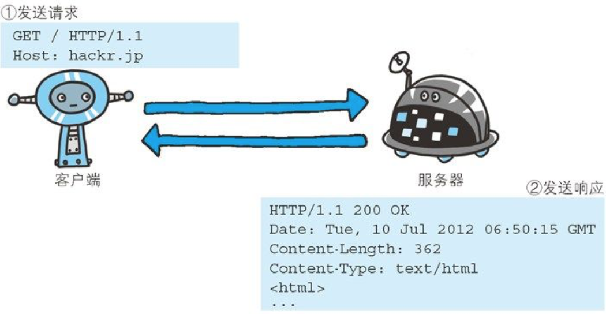

简单的HTTP协议
http协议用于客户端和服务器端之间的通信
客户端：请求访问文本或者图像等资源的一端称为客户端，请求必定为客户端发出
服务器端：提供资源响应的一端称为服务器端，服务器端回复响应
通过请求和响应的交换达成通信
http协议规定，请求从客户端发出，最后服务器端响应该请求并返回

//以下为客户端发送给服务端的请求报文中的内容
“GET /index.htm HTTP/1.1
Host: hackr.jp”
GET表示请求访问服务器的类型，称为方法
/index.htm指明请求访问的资源对象，也叫做请求URI
HTTP/1.1即HTTP的版本号，用来提示客户端使用的http协议功能
综合以上，这段请求的内容的意思是：请求访问某台http服务器上的/index.html页面资源
“HTTP/1.1 200 OK
Date: Tue, 10 Jul 2012 06:50:15 GMT //创建响应的日期时间
Content-Length: 362
Content-Type: text/html //以下的为响应主体
<html>”
HTTP/1.1表示服务器对应的http版本
200 ok表示请求的处理结果的状态码和原因短语
http是不保存状态的协议
http协议自身不对请求和响应之间的通信状态进行保存，这是为了更快的处理大量的事务，确保协议的可伸缩性
请求URI定位资源
http协议使用URI定位互联网上的资源
告知服务器意图的http方法
GET，获取资源
POST，传输实体的主体
PUT，传输文件
HEAD，获得报文首部
DELETE，删除文件，删除指定的资源
OPTIONS，用来查询针对请求URI指定的资源支持的方法
TRACE，让web服务器端将之前的请求通信环回给客户端的方法
CONNECT，要求在与代理服务器通信时建立隧道，实现用隧道协议进行tcp通信
使用cookie的状态管理
cookie技术通过在请求和响应报文中写入cookie信息来控制客户端的状态